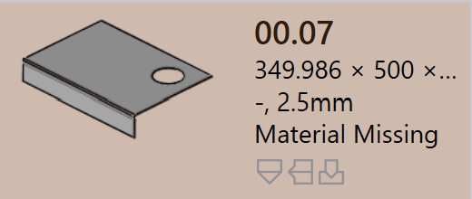

부품 상태
부품을 TruSmartCAM 으로 가져오면 해당 판금 기술이 부품에 대해 자동으로 처리됩니다. 이 프로세스 중에 TruSmartCAM 은(는) 부품의 형상, 재료 및 제조 가능성을 검증하여 부품이 툴링 준비가 되었는지 확인합니다.
부품 상태는 부품 타일의 부품 이름 아래에 표시되어 부품의 현재 검증 상태를 나타냅니다.
부품 상태 유형은 부품에 할당된 다양한 검증 결과를 나타냅니다. 이러한 상태는 툴링을 진행하기 전에 해결해야 하는 부품의 설계, 재료 또는 형상과 관련된 문제를 나타냅니다.
다음 이미지는 검증 후 부품 타일에 표시될 수 있는 부품 상태의 예를 보여줍니다. 각 부품 상태는 특정 검증 결과를 나타냅니다. 각 부품 상태의 원인은 다음 섹션에서 설명합니다.

부품 오류
CAD(Computer-Aided Design) 오류는 열린 윤곽선, 누락된 형상 또는 할당되지 않은 재료와 같이 부품 설계 또는 형상에 문제가 있을 때 발생합니다. 이러한 오류는 CAD 모델에서 발생하며 부품이 추가로 처리되는 것을 방지합니다.
-
Bend infeasible : TruSmartCAM 은(는) 부품에 대한 유효한 밴딩 방법을 자동으로 찾으려고 시도합니다. 적합한 밴드 솔루션을 찾을 수 없으면 부품이 밴드 불가능으로 표시됩니다.
-
Cut infeasible : 밴드 경고를 무시하면 TruSmartCAM 은(는) 절단 방법을 찾으려고 시도합니다. 유효한 절단 솔루션을 찾을 수 없으면 부품이 절단 불가능으로 표시됩니다.
재료 오류
-
Material Missing : 부품의 두께는 CAD 모델에서 읽어와 TruSmartCAM Raw Material 데이터베이스의 재료와 일치시킵니다. 일치하는 재료를 찾을 수 없으면 부품에 Material Missing 오류가 표시됩니다.
-
Material not assigned : CAD 모델에 재료 매핑 필드가 없거나 필드가 비어 있으면 TruSmartCAM 은(는) 재료를 할당할 수 없습니다. 이 경우 부품에 Material not assigned 오류가 표시됩니다.
지오메트리 오류
-
Open contours detected : CAD 파일에 하나 이상의 열린(불완전한) 형상이 있어 적절한 툴링을 방해합니다.
-
Multiple outer contours detected : CAD 파일에 두 개 이상의 외부 닫힌 루프가 있어 처리 중에 혼란을 야기합니다.
-
Nascent error : 부품이 스프레드시트(CSV 또는 XLSX)에서 로드되었지만 실제 CAD 파일이 누락된 경우 nascent 부품으로 표시됩니다.
-
Geometry missing : CAD 모델에 유효한 형상이 없거나 형상을 읽을 수 없어 툴링에 사용할 수 없습니다.